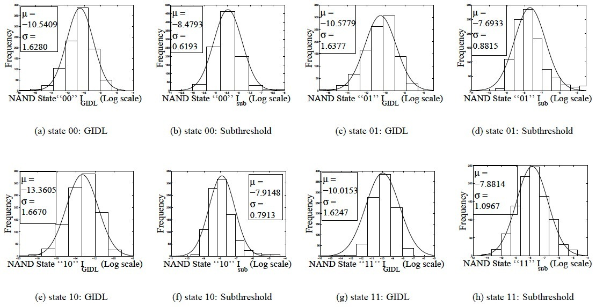
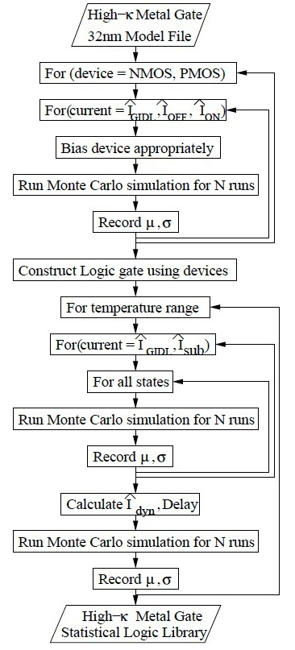
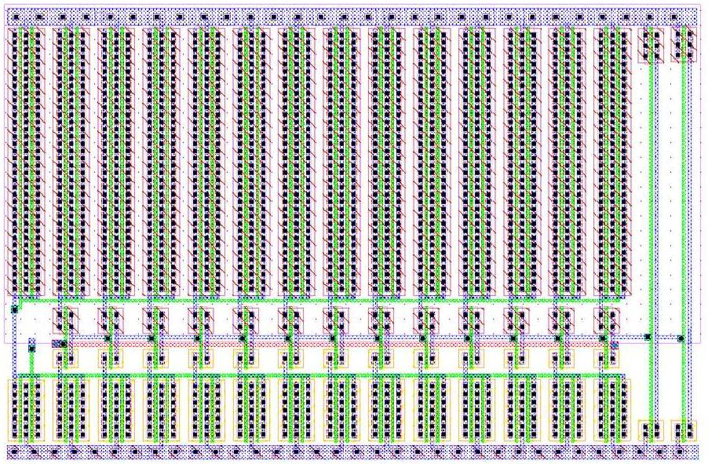

|
NSF
Award CCF-0702361: A Comprehensive Methodology for Early
Power-Performance Estimation of Nano-CMOS Digital Systems
Project Scope
Today's
large and complex digital system designs involve tradeoffs among its
functionality, power consumption, and circuit complexity. At the system
level, power and performance are two important metrics used in
evaluating the design quality and making the necessary tradeoffs. In
order to simplify the design process and reduce design cycle time
considerably, the digital design engineer must have the ability to
choose a technology and explore power-performance aspects of a design
at the system level. The primary goal of this project is to facilitate
the estimation of power and performance profiles of systems when they
are constructed using nano-CMOS processes. The following research
activities are proposed spanning from transistor level to system level
abstractions to meet the above objectives:
- Study the impact of
all possible input states on switching current, gate tunneling current,
and subthreshold current as well as delay effects for standard logic
gates.
- Develop statistically
models for capacitance switching current, gate oxide tunneling current,
subthreshold current, and propagation delay in terms of functions of
process and design parameters at each level of digital nano-CMOS design
abstraction.
- Account both
intra-die and inter-die (mismatch) process and design variations in the
modeling.
- Characterize
architectural-level
modules such as adders, subtractors, multipliers, memories, etc. for
statistical power and performance as functions of process and design
parameters using high-level structural event-driven (VHDL or Verilog)
probabilistic simulations.
- Formulate power and
performance metrics in terms of device feature size so that the same
base models can be utilized across different technologies using
existing technology-dependent data. As new technology nodes are being
characterized, new data will be incorporated dynamically with the
proposed methodology flow.
Project Personnel
Faculty:
- Saraju
P. Mohanty (Principal Investigator) -- Contributions to the Project
include: Co-ordinating the overall project, generating new ideas and
themes for publication, writing the research outcomes as papers, and
making conference presentations.
- Elias
Kougianos (Co-Principal Investigator) -- Contributions
to the Project include: Generating new ideas and
themes for publication, training students on tools, and writing the research
outcomes as
papers.
Students:
The
contributions include -- Implementing the ideas, generating the
results, compiling results for publication, and making conference
presentations.
- Dhruva Ghai: Ph. D. (Computer Science and Engineering), Dissertation:
"Variability
Aware Low-Power Techniques for Nanoscale Mixed-Signal
Circuits",
Department of Computer Science and
Engineering,
University of North Texas, Spring 2009, major professor - Mohanty,
co-major - Kougianos. (First UNT Computer
Science and Engineering Ph.D. with VLSI specialization.) (First Employment: nanoDragon LLC, Texas)
Project Publications
- D.
Ghai, S. P. Mohanty,
and E. Kougianos, "Design
of Parasitic and Process Variation Aware RF Circuits: A Nano-CMOS VCO
Case Study", IEEE
Transactions on Very Large Scale Integration Systems (TVLSI),
Vol. 17, No. 9, September 2009, pp. 1339-1342.
- E.
Kougianos
and S.
P. Mohanty, "Impact
of
Gate-Oxide Tunneling on Mixed-Signal Design and
Simulation of a Nano-CMOS VCO", Elsevier
Microelectronics Journal (MEJ), Volume 40, Issue 1, January
2009, pp. 95-103.
- S. P. Mohanty, E. Kougianos, and D. K.
Pradhan,
"Simultaneous Scheduling and Binding for Low Gate Leakage
Nano-Complementary Metal-Oxide-Semiconductor Datapath Circuit
Behavioural Synthesis", IET Computers & Digital Techniques
(CDT), March 2008, Volume 2, Issue 2, pp. 118-131.
- D.
Ghai, S. P. Mohanty, and
E. Kougianos, "A
Variability Tolerant System-on-Chip Ready Nano-CMOS Analog-to-Digital
Converter
(ADC)", Taylor & Francis International Journal
of Electronics (IJE), Vol.
97, No. 4, April 2010, pp. 421--440.
- E.
Kougianos and S. P. Mohanty, "Design
Metrics for Gate Oxide Tunneling Leakage Characterization in Nano-CMOS
Transistors", Taylor & Francis International Journal of
Electronics (IJE), Vol. 95, No. 5, May 2008, pp. 411-423.
- J.
Singh, D. K.
Pradhan, S. Hollis, S. P. Mohanty,
and J. Mathew, "Single
Ended 6T SRAM with Isolated Read-Port for Low-Power
Embedded Systems", in Proceedings of the 12th IEEE
International Conference
on Design Automation and Test in Europe (DATE), pp. 917-922, 2009 (blind
review, 226 papers accepted out of 965 submissions, acceptance rate
- 23.4%).
- D.
Ghai, S. P. Mohanty,
and E. Kougianos, "Variability-Aware
Optimization
of Nano-CMOS Active Pixel Sensors using Design and Analysis of Monte
Carlo Experiments", in Proceedings
of the 10th IEEE International
Symposium on Quality Electronic Design (ISQED), pp.
172-178, 2009 (blind
review, 87 regular papers and 50 poster papers accepted
out of 300 submissions, acceptance rate " 45.7%).
- D.
Ghai, S. P. Mohanty,
E. Kougianos, and P. Patra, "A
PVT
Aware Accurate
Statistical Logic Library for High-K Metal-Gate Nano-CMOS",
in Proceedings of the
10th IEEE International Symposium on Quality
Electronic Design (ISQED), pp. 47-54, 2009 (blind review, 87
regular papers accepted out of 300 submissions, acceptance rate - 29%).
- S.
P. Mohanty, "Unified
Challenges in Nano-CMOS High-Level Synthesis", Abstract, Invited
Talk, in Proceedings of the 22nd
IEEE International Conference on VLSI Design (VLSID), pp.
531-531, 2009.
- J.
Singh, J.
Mathew, S. P. Mohanty, and D. K. Pradhan, "Single
Ended
Static Random
Access Memory for Low-Vdd,
High-Speed Embedded Systems", in Proceedings
of the 22nd IEEE International Conference on VLSI Design (VLSID),
pp. 307-312, 2009 (blind
review, 57
regular papers and 22 short papers accepted out of 320 submissions,
acceptance rate - 24.6%).
Project Deliverables
Register-Transfer Level (RTL)
component library:
Datapath Component Library for Various Gate-Oxide Thicknesses for
45nm CMOS. |
|
Gate-oxide leakage current and propagation delay with respect to gate
oxide thickness for 45nm CMOS. |
|
RTL Library for High-K Nano-CMOS at 45nm Node. |
|
RTL library Nominal results showing individual components of power
consumption for different output corners. |
|
|
Logic-Level cell library:
PVT aware statistical distribution for a
High-K/Metal-Gate (HKMG) NAND logic gate.
|
|
PVT aware statistical data for a High-K/Metal-Gate
(HKMG) NAND logic gate.
|
|
Statistical distribution of leakage for a
High-K/Metal-Gate (HKMG) NAND logic gate.
|

|
NAND gate gate leakage and propagation delay for
different high-K and load factor.
|
|
NAND gate gate leakage and propagation delay for
different high-K, Tgate, and VDD.
|
|
NAND gate for selected High-K gate dielectrics (SiO2, SiON, Si3N4,
Al2O3, ZrSiO4, HfSiO4, and HfO2) for different Tgate and VDD.
|

|
Effects of statistical process variation on gate
leakage, subthreshold leakage, dynamic power and propagation delay in a
2-input NAND gate.
|
|
|
Optimal Design
Flows:
RTL Statistical Optimization Flow.
|
A methodology for PVT aware statistical logic library creation.
|
|
 |
Simulation methodology accounting for
statistical process variation.
|
|
Optimization flow for a nano-CMOS APS.
|
Fast Optimization flow for a nano-CMOS VCO.
|

|
|
|
|
Sample Circuits and Systems:
A 65nm SRAM Array Layout.
|
A 90nm CMOS Baseline VCO Layout. |
|

|
A 90nm Baseline ADC Layout
|
A 90nm CMOS Baseline ULC Layout.
|
|
|
|